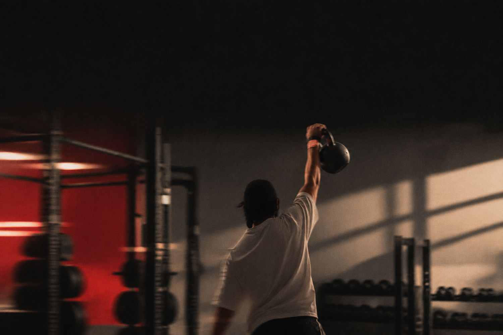

ساعتين حديد بالأسبوع تكفي
دراسة تابعت 147 ألف شخص 30 سنة لقت النقطة المثالية لتمارين المقاومة. وهذي خطتكم.
صباح الخير ☕ كم ساعة تمرين مقاومة بالأسبوع تحتاجون فعلاً؟ دراسة من Harvard تابعت أكثر من 147 ألف شخص لمدة تقارب 30 سنة، والجواب أقل مما تتوقعون.
- من 90 إلى 120 دقيقة مقاومة بالأسبوع ارتبطت بانخفاض خطر الوفاة لأي سبب بنسبة 13٪.
- ما فيه فايدة إضافية واضحة بعد حوالي 120 دقيقة. والأفضل تجمعون المقاومة مع الكارديو.
- تحت: خطة جلستين بالأسبوع، وكم بروتين تحتاجون.
العلم يقول
باحثين من كلية T.H. Chan للصحة العامة في Harvard حللوا بيانات 147,374 بالغ من ثلاث دراسات طويلة، ونشروا النتائج في British Journal of Sports Medicine في يونيو 2026. المشاركين كانوا يعبّون استبيانات عن تمارونهم كل سنتين.
اللي سووا 90 إلى 120 دقيقة مقاومة بالأسبوع كان خطر وفاتهم لأي سبب أقل بـ 13٪. واللي جمعوا المقاومة مع نشاط هوائي منتظم وصل الانخفاض عندهم لـ 45٪، مقارنة بالناس اللي ما يسوون مقاومة وكارديوهم قليل. وبعد حوالي 120 دقيقة بالأسبوع، ما ظهرت فايدة إضافية.
دراسة رصدية تبيّن ارتباط، وما تثبت إن الحديد هو السبب. التمارين مسجلة من المشاركين أنفسهم، وأغلبهم عاملين في القطاع الصحي في أمريكا.
خطتكم هذا الأسبوع
جلستين، كل وحدة 45 إلى 60 دقيقة مع الإحماء، يعني تقريباً 100 دقيقة بالأسبوع، في وسط النطاق اللي ارتبط بأكبر فايدة. خلوا بين الجلستين يومين راحة على الأقل.
| التمرين | المجموعات × التكرار | ملاحظة |
|---|---|---|
| Goblet Squat | 3 × 10 | الدمبل قدام صدرك، والظهر مستقيم |
| Romanian Deadlift | 3 × 10 | الحركة من الورك مو من الظهر |
| Push-up | 3 × 8–12 | ابدأوا على الركب أو على طاولة إذا لزم |
| One-arm Row | 3 × 10 لكل يد | اسحبوا الكوع لورا، مو لفوق |
| Plank | 3 × 30 ثانية | شدوا البطن والمؤخرة |
القاعدة الذهبية: لما تقدرون تسوون الحد الأعلى من التكرارات بسهولة في كل المجموعات، زيدوا الوزن شوي في الجلسة الجاية. هذا اسمه progressive overload، وهو اللي يصنع الفرق.
على صحنكم
الجمعية الدولية للتغذية الرياضية (ISSN) توصي اللي يتمرنون بـ 1.4 إلى 2 جرام بروتين لكل كيلو من وزنهم يومياً، مقسمة على الوجبات، بحيث كل وجبة فيها تقريباً 20 إلى 40 جرام.
الاحتياج اليومي 84 إلى 120 جرام. يعني فطور فيه 3 بيضات ولبن يوناني (حوالي 30 جرام)، وغداء فيه 150 جرام صدر دجاج (حوالي 45 جرام)، وعشاء فيه علبة تونة أو عدس مع زبادي (حوالي 30 جرام).
خرافة وحقيقة
سؤال اليوم
وش الوقت الثابت في أسبوعكم اللي تقدرون تحطون فيه جلستين، وما يتأثر بالشغل ولا بالمشاوير؟
جرعة للمعلومة العامة ومو بديل عن استشارة طبيب أو مختص، خصوصاً إذا عندكم إصابة أو حالة صحية.
المصادر
نشوفكم بكرة الساعة 8 مع جرعة جديدة. يومكم سعيد 🤍
جرعة